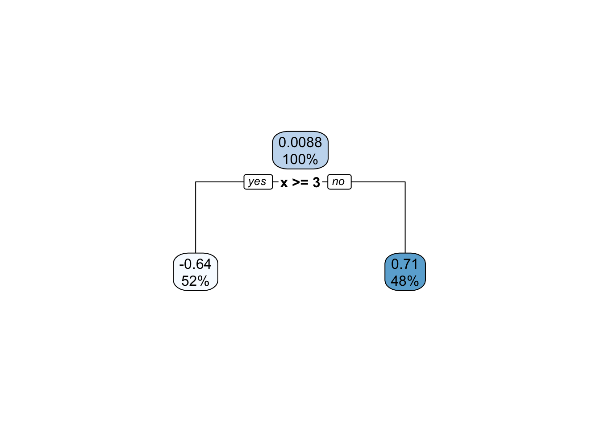
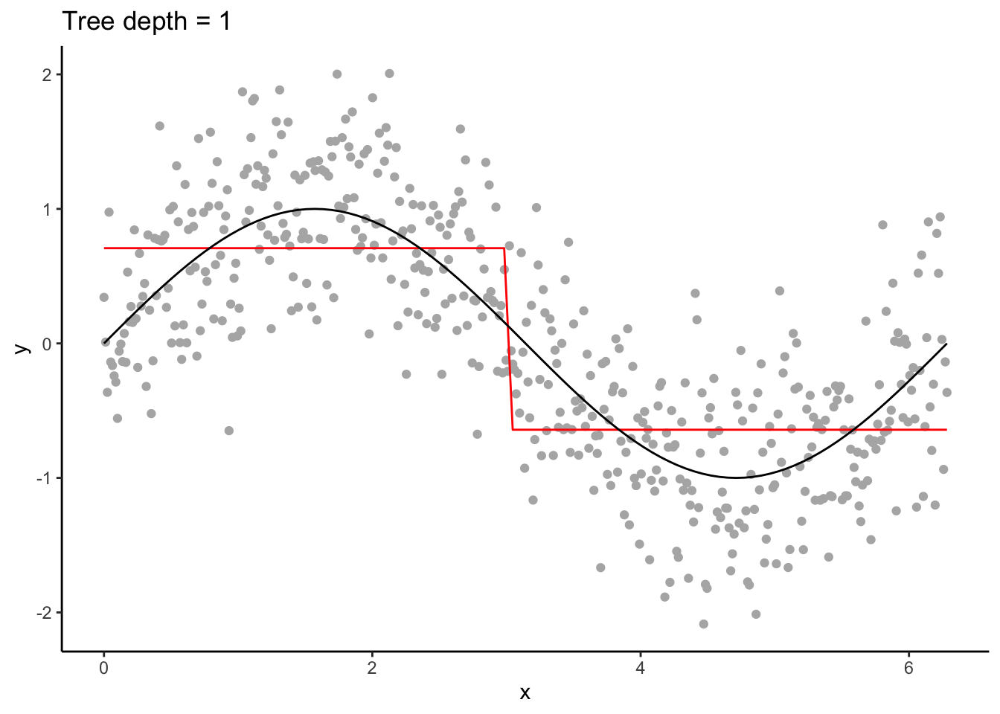
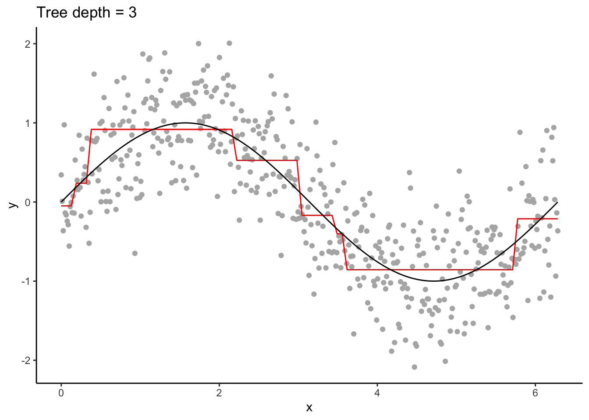
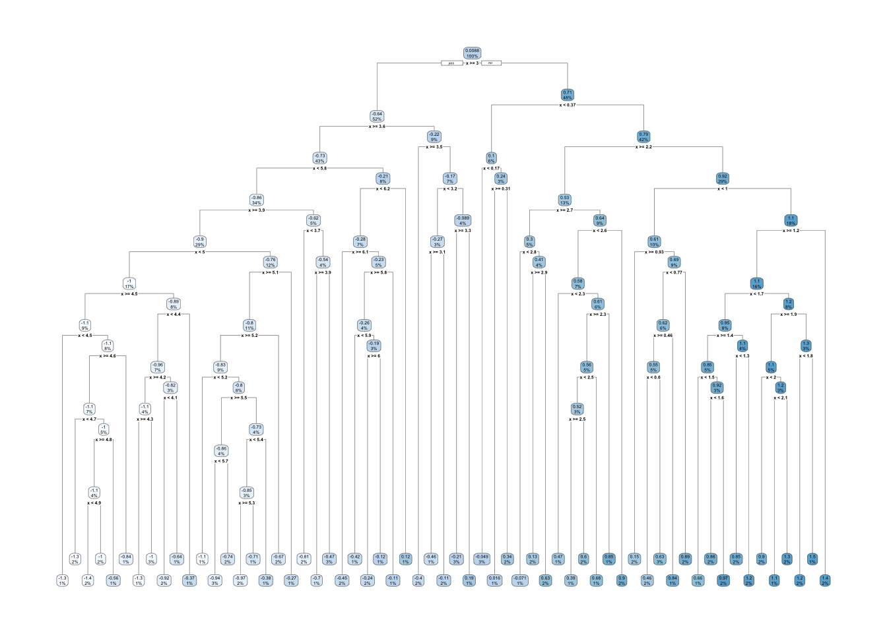
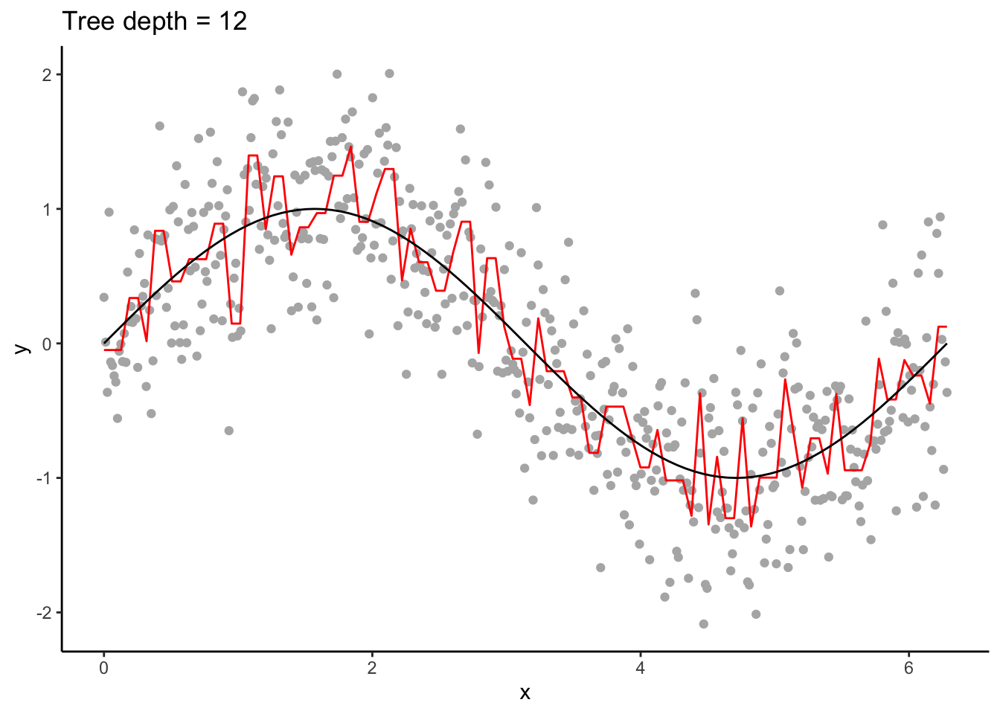

library(dplyr)
library(ggplot2)
library(readr)
library(tidyr)
library(caret)
library(recipes)
library(lubridate)12 Random Forest
Chapter lead author: Benjamin Stocker
12.1 Learning objectives
In this chapter you will learn how to implement a Random Forest model.
You will learn:
- the principles of a decision tree, and purpose of bagging
- how decision trees make up a Random Forest
12.2 Setup
In this Chapter, we will need the following libraries
12.3 Tutorial
12.3.1 Decision trees
Just as a forest consists of trees, a Random Forest model consists of decision trees. Therefore, let’s start with a decision tree, also known as CART (classification and regression tree). Consider a similar example as in Chapter 10 where we fitted a function \(Y = f(X)\) with polynomials. Instead, here we fit it with a decision tree. The tree grows by successively splitting (branching) the predictor range (\(X\)) into binary classes (two regions along \(X\)) and predicting a different and constant value \(c\) for the target variable on either side of the split. The location of the split is chosen such that the overall error between the observed response (\(Y_i\)) and the predicted constant (\(c_i\)) is minimized. The error is determined based on whether we’re dealing with a regression or a classification problem.
- For regression problems, the sum of square errors is minimized.
\[ \text{SSE} = \sum_i{(c_i-Y_i)^2} \]
- For classification problems, the cross-entropy or the Gini index are typically maximized. Both are measures of the difference between probability distributions (main ideas in this blogpost).


As a tree grows, splits are recursively added. In our example, only one predictor variable is available. The splits are therefore performed always on the same variable, splitting up \(X\) further.

In the visualisation of the decision tree above, the uppermost decision is the root node. From there, two branches connect to internal nodes, and at the bottom of the tree are the leaf nodes. (The nature-aware reader may note that leaves are typically at the top, and roots at the bottom of a tree. Nevermind.)
Typically, multiple predictor variables are available. For each split, the variable and the location of the split along that variable is determined to satisfy the respective criteria for regression and classification.
Decision trees are high variance learners. That is, as the maximum tree depth is increased, the variance of predictions increases continuously. In other words, the depth of a tree controls the model complexity and the bias-variance trade-off. With excessive depth, decision trees tend to overfit.


An advantage of decision trees is that they require minimal pre-processing of the data and they are robust to outliers. This is thanks to their approach of converting continuous variables into binary classes for predictions. Hence, they can naturally handle a mix of continuous and categorical predictor variables. Furthermore, predictions are not sensitive to the distance of a predictor variable’s value to a respective variable’s split location. This makes decision trees robust to outliers. It also implies that predictions to unseen data points that lie outside the range of values in the training data (extrapolation) are conservative.
The disadvantage is, as demonstrated above, the tendency towards high variance of predictions when models get complex (deep trees). And thus, decision trees tend to be outperformed by other algorithms.
12.3.2 Bagging
The approach of bagging is to smooth out the high variance of decision tree predictions by averaging over multiple, slightly different trees. Differences between the trees are introduced by bagging, that is, by training each individual tree only on a bootstrapped sample of the full training data. Here, a decision tree has the role of a base learner and bagging takes an ensemble approach. Final predictions are then taken as the average (for regression) or the most frequent class (for classification) across all trees’ predictions.
Bagging is particularly effective when the base learner tends to have a high variance. The variance of predictions is continuously reduced with an increasing number of decision trees over which averages are taken and no tendency to overfit results from increasing the number of trees. However, the computational cost linearly increases with the number of trees and the gain in model performance levels out relatively quickly. Bagging also limits the interpretability. We can no longer visualise the fitted model with an intuitive graphical decision tree as done above.
12.3.3 From trees to a forest
While bagging reduces the variance in predictions, limits to predictive performance remain. This is linked to the fact that, although a certain degree of randomness is introduced by sub-sampling the training data for each tree, individual trees often remain relatively similar. This is particularly expressed if variations in the target variable are controlled primarily by variations in a small number of predictor variables. In this case, decision trees tend to be built by splits on the same variable, irrespective of which bootstrapped sample the individual tree is trained with.
Random Forest solves this problem by introducing an additional source of randomness: Only a subset of the predictor variables are considered at each split. This strongly reduces the similarity of individual trees (and also reduces computational costs) and leads to improved predictive performance.
The number of variables to consider at each split is a hyperparameter of the Random Forest algorithm, commonly named \(m_\text{try}\). In the example below, we use the implementation in the {ranger} package (wrapped with {caret}), where the respective model fitting function has a hyperparameter mtry. Common default values are \(m_\text{try} = p/3\) for regression and \(m_\text{try} = \sqrt{p}\) for classification, where \(p\) is the number of predictors. Model complexity is controlled by the depth of the trees. Depending on the implementation of the Random Forest algorithm, this is governed not by explicitly specifying the tree depth, but by setting the number of observations in the leaf node. In the {ranger} package, the respective hyperparamter is min.node.size. The number of trees is another hyperparameter and affects predictions similarly as described above for bagging.
A great strength of Random Forest is, inherited by the characteristics of its underlying decision trees, its minimal requirement of data pre-processing, its capability of dealing with continuous and categorical variables, and its robustness to outliers. With the default choices of \(m_\text{try}\), Random Forest provides very good out-of-the-box performance. However, the hyperparameters of Random Forest have interactive effects and should be searched systematically.
# Data loading and cleaning
source("R/eval_model.R")
# read daily fluxes
daily_fluxes <- readr::read_csv(
"./data/FLX_CH-Dav_FLUXNET2015_FULLSET_DD_1997-2014_1-3.csv"
)
# select only the variables we are interested in
# such as the target (GPP_NT_VUT_REF), the
# quality control parameters ending in QC,
# the meteorological covariates ending in F,
# while removing (-) a weird useless variable JSB
#
# Subsequently convert dates to a nice date format
# set all -9999 to NA and only retain values with
# QC value of > 0.8
daily_fluxes <- daily_fluxes |>
# select only the variables we are interested in
dplyr::select(TIMESTAMP,
GPP_NT_VUT_REF, # the target
ends_with("_QC"), # quality control info
ends_with("_F"), # includes all all meteorological covariates
-contains("JSB") # weird useless variable
) |>
# convert to a nice date object
dplyr::mutate(TIMESTAMP = ymd(TIMESTAMP)) |>
# set all -9999 to NA
dplyr::mutate(across(where(is.numeric), ~na_if(., -9999))) |>
# retain only data based on >=80% good-quality measurements
# overwrite bad data with NA (not dropping rows)
dplyr::mutate(GPP_NT_VUT_REF = ifelse(NEE_VUT_REF_QC < 0.8, NA, GPP_NT_VUT_REF),
TA_F = ifelse(TA_F_QC < 0.8, NA, TA_F),
SW_IN_F = ifelse(SW_IN_F_QC < 0.8, NA, SW_IN_F),
LW_IN_F = ifelse(LW_IN_F_QC < 0.8, NA, LW_IN_F),
VPD_F = ifelse(VPD_F_QC < 0.8, NA, VPD_F),
PA_F = ifelse(PA_F_QC < 0.8, NA, PA_F),
P_F = ifelse(P_F_QC < 0.8, NA, P_F),
WS_F = ifelse(WS_F_QC < 0.8, NA, WS_F)) |>
# drop QC variables (no longer needed)
dplyr::select(-ends_with("_QC"))
# Data splitting
set.seed(123) # for reproducibility
split <- rsample::initial_split(daily_fluxes, prop = 0.7, strata = "VPD_F")
ddf_train <- rsample::training(split)
ddf_test <- rsample::testing(split)
# The same model formulation is in the previous chapter
pp <- recipes::recipe(GPP_NT_VUT_REF ~ TA_F + SW_IN_F + LW_IN_F + VPD_F + P_F + WS_F,
data = ddf_train) |>
recipes::step_center(recipes::all_numeric(), -recipes::all_outcomes()) |>
recipes::step_scale(recipes::all_numeric(), -recipes::all_outcomes())
mod <- train(
pp,
data = ddf_train %>%
drop_na(),
method = "ranger",
trControl = trainControl(method = "cv", number = 5, savePredictions = "final"),
tuneGrid = expand.grid( .mtry = floor(6 / 3),
.min.node.size = 5,
.splitrule = "variance"),
metric = "RMSE",
replace = FALSE,
sample.fraction = 0.5,
num.trees = 2000, # high number ok since no hperparam tuning
seed = 1982 # for reproducibility
)# generic print
print(mod)Random Forest
1910 samples
8 predictor
Recipe steps: center, scale
Resampling: Cross-Validated (5 fold)
Summary of sample sizes: 1528, 1528, 1529, 1527, 1528
Resampling results:
RMSE Rsquared MAE
1.411155 0.7047382 1.070285
Tuning parameter 'mtry' was held constant at a value of 2
Tuning
parameter 'splitrule' was held constant at a value of variance
Tuning parameter 'min.node.size' was held constant at a value of 5eval_model(mod = mod, df_train = ddf_train, df_test = ddf_test)Loading required package: magrittr
Attaching package: 'magrittr'The following object is masked from 'package:tidyr':
extract`geom_smooth()` using formula = 'y ~ x'
`geom_smooth()` using formula = 'y ~ x'12.3.4 Out-of-bag prediction
A further advantage of Random Forests is that the bagging, i.e., sub-setting the training data as part of the algorithm, provides a direct way to estimate the out-of-sample (in Random Forest-speak the “out-of-bag”) prediction. Remember that bagging implies the use of only part of the data for building the decision trees. The remainder of the data can be used to estimate that tree’s out-of-sample (“out-of-bag”) prediction. The respective estimate is generated by the {ranger} implementation of Random Forest and can be accessed as part of the fitted model object. If the data is sufficiently large, the out-of-bag prediction should approximate a k-fold cross-validation.
# OOB prediction error of the final model
sqrt(mod$finalModel$prediction.error)[1] 1.40572# RMSE of 5-fold cross-validation
mod$results$RMSE[1] 1.411155In other words, Random Forest has another advantage: Avoiding the need for cross-validation reduces the computational burden of model training - by factor \(1/k\) for k-fold cross-validation
12.4 Exercises
Fitting a Random Forest
Fit a Random Forest model to the flux data used in the examples of this chapter. Implement bagging 12 decision trees (num.trees), each with a minimum number of observations per leaf of 5 (min.node.size). You can consult the respective arguments for the "ranger" method typing ?ranger.
Repeat the fitting with 1000 decision trees and minimum node size of 5, then with 12 decision trees and a minimum node size of 1. Then, discuss the role that the number of decision trees and the minimum number of leaf observations of a tree play in the bias-variance trade-off and in the computation time.
Hyperparameter tuning
In a previous tutorial, you learned how to tune the hyperparameter \(k\) in a KNN by hand. Now you will do the hyperparameter tuning for a Random Forest model. The task gets more complicated because there are more hyperparameters in a Random Forest. The {caret} package allows to vary three hyperparameters:
mtry: The number of variables to consider to make decisions at each node, often taken as \(p/3\) for regression, where \(p\) is the number of predictors.min.node.size: The number of data points at the “bottom” of each decision tree, i.e. the leaves.splitrule: The function applied to data in each branch of a tree, used for determining the goodness of a decision.
Answer the following questions, giving a reason for your responses:
Check the help for the
ranger()function and identify which values each of the three hyperparameters/arguments can take. Select a sensible range of values for each hyperparameter, that you will use in the hyperparameter search.In the previous exercise, you have seen how the minimum node size regulates fit quality and overfitting. How does the minimum node size relate to tree depth? What happens at the edge cases, when
min.node.size = 1and whenmin.node.size = n(nbeing the number of observations)? Note that it’s not necessary to provide themax.depthargument totrain()becausemin.node.sizeis already limiting the size of the trees in the Random Forests.Greedy hyperparameter tuning: Sequentially optimize the choice of each hyperparameter, one at a time and keeping the other two constant. Take the code from the tutorial as a starting point, and those hyperparameter values as an initial point for the search. Implement the optimization routine yourself, using loops.
Tip: Keep the number of trees low, otherwise it takes too long to fit each Random Forest model.
Grid hyperparameter tuning: Starting with the same range of values for each hyperparameter as before, look for the combination that leads to the best model performance among all combinations of hyperparameter values. This time, use the
expand.grid()function to create a data.frame of hyperparameter value combinations. This grid will be passed totrain()via thetuneGridargument (see example in the tutorial). This will automatically do the hyperparameter search for you. Comment the output oftrain()and the results of the hyperparameter search.Compare the results from the two hyperparameter tuning approaches. Do the optimal hyperparameters coincide? Are the corresponding RMSE estimates similar? What are the advantages and disadvantages of the greedy and the grid approaches?
Model performance
You have trained several Random Forest models. Evaluate the model performance on the best model (the one for the tuned hyperparameters) and on one of your worse models. If you compare the RMSE and \(R^2\) on the training and the test set, does it show overfitting?